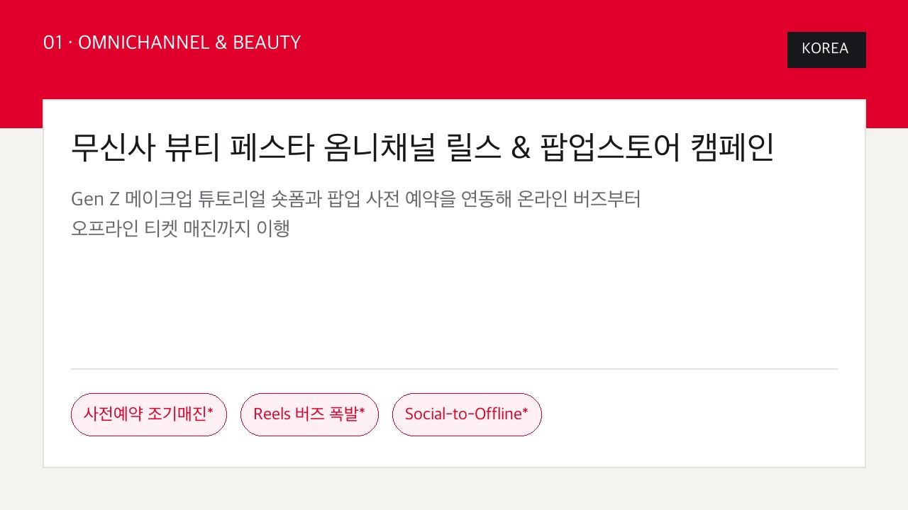
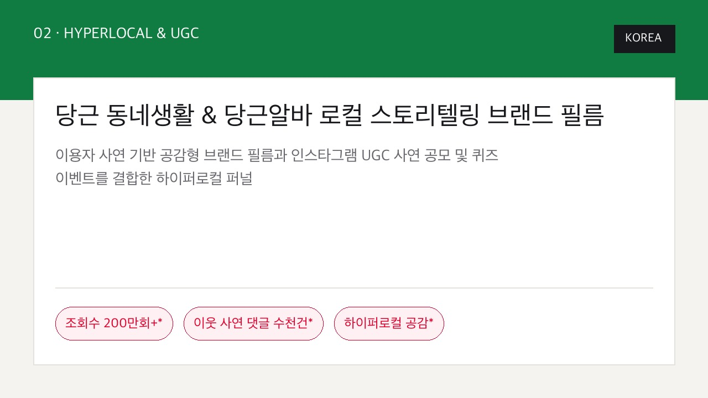
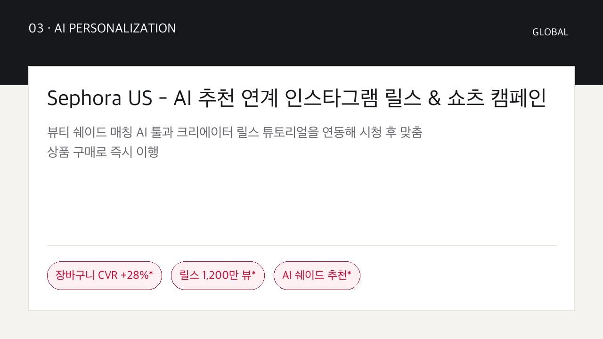
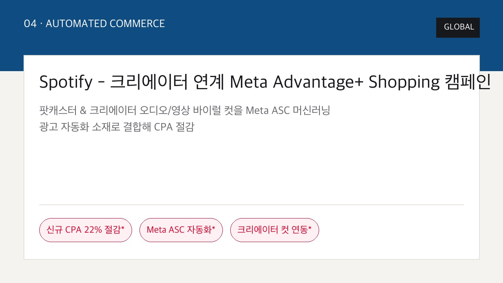
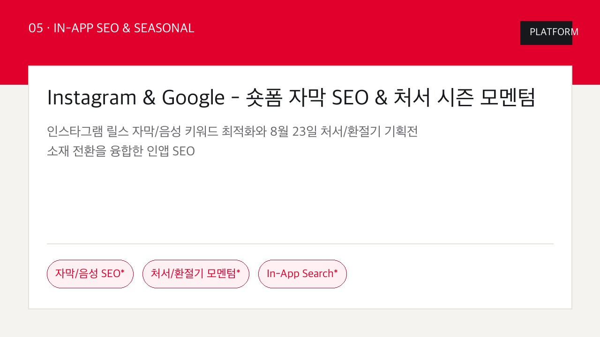
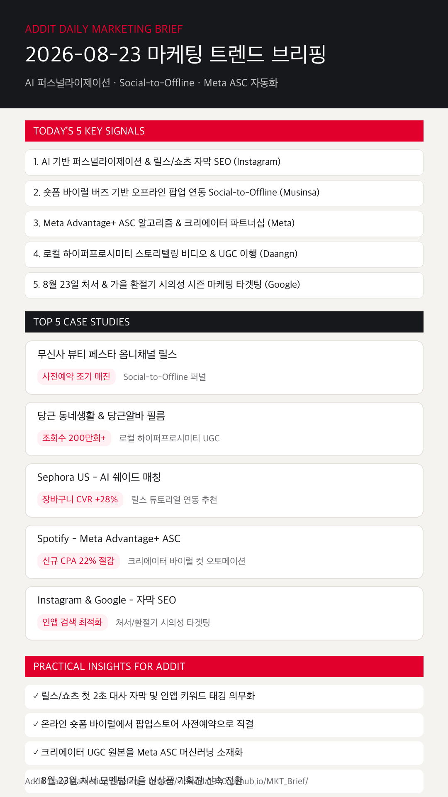

01
AI 기반 퍼스널라이제이션과 릴스·쇼츠 자막/음성 SEO가 노출을 높인다
인스타그램과 유튜브 내 자연어 자막 키워드 배치 및 키워드 태깅이 검색 노출과 인앱 발견율을 지배합니다. (Instagram)
무신사 뷰티 Social-to-Offline, 당근 로컬 스토리텔링, Sephora AI 쉐이드 매칭, Spotify Meta ASC 오토메이션 및 릴스 자막/음성 SEO 전략을 한눈에 확인합니다.
인스타그램과 유튜브 내 자연어 자막 키워드 배치 및 키워드 태깅이 검색 노출과 인앱 발견율을 지배합니다. (Instagram)
무신사 뷰티 페스타처럼 온라인 릴스 버즈에서 팝업스토어 사전예약 및 오프라인 방문으로 이행시키는 Social-to-Offline 퍼널이 확산됩니다. (Musinsa)
Spotify 사례처럼 브랜드 광고 대신 크리에이터 오리지널 바이럴 컷을 ASC 알고리즘에 결합해 신규 타깃 CPA를 22% 절감합니다. (Meta)
당근 사례처럼 주민 사연 기반 브랜디드 필름과 댓글 퀴즈·사연 응모로 친밀감과 실제 이용자 참여를 이끌어냅니다. (Daangn)
시즌 전환기 모멘텀에 맞춰 뷰티·패션·라이프스타일 기획전 메시지와 시의성 숏폼 소재를 빠르게 교체 배포합니다. (Google)

KOREA메이크업 튜토리얼 숏폼과 팝업 사전 예약 링크를 연동해 릴스 버즈 폭발 및 팝업 티켓 조기 매진을 기록했습니다.

KOREA하이퍼로컬 스토리텔링 비디오와 사연 댓글 공모를 결합해 유튜브 조회수 200만 회 및 수천 건의 이웃 댓글을 달성했습니다.

GLOBALAI 쉐이드 추천 솔루션을 숏폼 튜토리얼에 결합해 장바구니 전환율(CVR) 28% 상승 및 릴스 1,200만 뷰를 기록했습니다.

GLOBAL팟캐스터 하이퍼 바이럴 컷을 Meta ASC 머신러닝 타겟팅으로 자동 최적화해 신규 프리미엄 구독 CPA를 22% 절감했습니다.

PLATFORM릴스/쇼츠 첫 2초 음성·자막 키워드 배치와 처서 절기 환절기 기획전 모멘텀을 융합한 인앱 탐색 최적화 퍼널입니다.
인스타그램 릴스와 유튜브 쇼츠 영상 내 첫 2초 대사 자막 처리 및 인앱 키워드 태깅을 의무화하여 검색 노출을 극대화합니다.
Instagram Business 근거 보기 →단순 온라인 클릭 유도에 그치지 않고 팝업스토어 사전예약, 체험존, 샘플링 연동으로 실물 경험 전환 퍼널을 완성합니다.
무신사 공식 사례 근거 보기 →반응률이 검증된 크리에이터 UGC 및 하이라이트 바이럴 컷을 Meta ASC 머신러닝 광고 타겟팅 소재로 즉시 확장해 CPA를 낮춥니다.
Meta Business 근거 보기 →지역 특성 및 실제 이용자 사연 기반 공감형 브랜드 필름을 제작하고, 댓글 사연 응모를 통해 고객의 자발적 UGC를 유도합니다.
당근 공식 사례 근거 보기 →8월 23일 처서 모멘텀에 맞춰 가을 신상품 및 환절기 케어 기획전 메시지와 시의성 숏폼 소재를 신속하게 배포합니다.
Google Ads 캘린더 근거 보기 →릴스 자연어 음성 인식 및 자막 키워드 기반 인앱 검색(In-App Search) 알고리즘 업데이트를 검토합니다.
Instagram Business 바로가기 →머신러닝 타겟팅 최적화 솔루션인 Meta ASC의 크리에이터 파트너십 이행 가이드라인을 확인합니다.
Meta Business 바로가기 →
마케팅 성과는 단순 온라인 광고의 조회수 싸움에서 AI 추천 솔루션, 팝업 연동 Social-to-Offline, Meta ASC 머신러닝 오토메이션의 퍼널 결합으로 완성됩니다.
{kind=link}